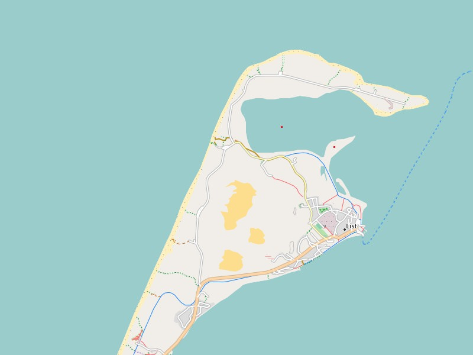
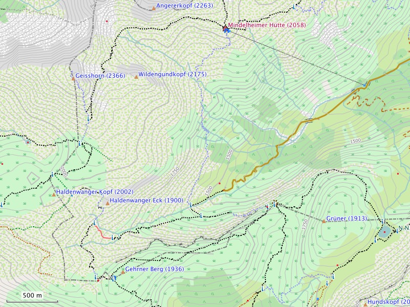

Known Issues:
Order of rendering lines:
The order in which lines are rendered can (sadly) not be changed and is therefore random. This means that with overlapping or crossing lines it is not possible to define which line is on
top and which line goes below. This may lead to unwanted effects, e. g. bridges over a river may seem interrupted by a gap. This gap exists in the rendering because the river line goes on
top of the bridge line. Routing is not effected through this.
Colors and contrast:
The design was created with rather "pale" colors and an "average" contrast. Road, paths and many important symbols are displayed more distinctly. The overall design follows the Mapnik
style of OpenStreetMap
Printing using BaseCamp on OS X:
While printing a map using BaseCamp on OS X (Mac) symbols are turned by 180 degrees and additionally mirrored. With BaseCamp on windows this does not happen.

Map representation in BaseCamp: The northernmost point of Germany - (called elbow) the north end of the island of Sylt to 0m altitude. Good to see the last dunes Germany - which
are shifting the way around 3-7 meters per year to the east.
Planed improvements, user requests:
Detail improvements:- Spanish translation
- Revisiting of stores displayed
- bicycle routing on highways of the category "trunk"
User requests:
There are no requests open at this time.

Map representation in BaseCamp: The southernmost point of Germany marked by the state boundary markers No. 147 1883m altitude.
Tips and tricks:
Symbols of public transportation:
Especially for passengers of public transportation the symbols of train stations, bus stops and subway stations are displayed concisely. It is possible to prevent these symbols from being
displayed. Therefore you have to deactivate the following display settings:
Hide Map Features -> Transportation -> Ground Transportation
Hide Map Features -> Transportation -> Transit Service
Symbols for places of worship:
Religious places like churches, mosques and synagogues are usually significant and well known points for orientation. The symbols for these places are concise. It is possible to prevent
these symbols from being displayed. Therefore you have to deactivate the following display settings:
Hide Map Features -> Community -> Place of Worship
Symbols for banks / ATMs:
"Leisure time is expensive" - therefore the symbol for ATMs is concise. It is possible to prevent these symbols from being displayed. Therefore you have to deactivate the following
display settings:
Hide Map Features -> Bank/ATM
Visibility of POIs on your GPS device:
Many POIs are only visible on maximum zoom. From the viewpoint of clarity this is a good feature. But with a GPS device you may not want to see more POIs in other zooming levels. Many GPS
devices provide settings for customizing the level for which POIs are being displayed. E. g. on a Dakota-20 you find these settings here:
Setup -> Map -> Advanced Map Setup -> Zoom Levels -> Map Points
Elevation lines:
Elevation lines provide important additional information for mountainous areas, where on plain area these may be bothersome. It is possible to prevent these lines from being
displayed.
Hide Map Features -> Contour -> Topographic
BaseCamp on a Mac with OS X:
If you want to use the Freizeitkarte maps on your Mac you have to install the App BaseCamp from the App Store (or Garmin). Additionally the programms MapManager and MapInstall (Garmin)
are required. The actual installation of the Freizeitkarte map is done by MapManager. All files ending with ".gmap" will be linked to MapManager - double click on a gmap file and it will
be installed. MapInstall loads a map (or part of it) on your GPS device or an external data storage such as a micro SD card. If you want to see every feature of the map it is recommended
to set the "Details" slider to max.
More than one active map on a GPS-device:
On your GPS device there should only be one map active. If not, this may lead to overlapping at the edges which cases issues with the display (missing or not matching map elements).
Hiking paths (tip by Günter from Fürth):
If you want hiking paths of the hiking clubs, cycle routes or public transportation as an overlay in addition to the Freizeitkarte you can download the respective img file(s) under this
link https://www.thkukuk.de/osm". You also find a description on how to load them on your Garmin device and activate in the profile of the
Freizeitkarte map.
With older Garmin devices that only allow a single img file named gmapsupp.img you have to merge the Freizeitkarte and the respective layer using the tool gmaptool, also described under
https://www.thkukuk.de/osm/#installation.
Device and map management:
Advisable in connection with maps and GPS devices are some freeware tools from JaVaWa. With "JaVaWa Device Manager" you can manage the
GPS device. E.g. you can make backups, save owner informations, or prevent the automatic loading of maps in Basecamp. Quite similar is "JaVaWa GMTK", which lets you manage your installed
maps in Basecamp. Also interesting for Mac users is the utility "CleanEject" which ensures that all trashed objects are deleted before you eject the SD-card.